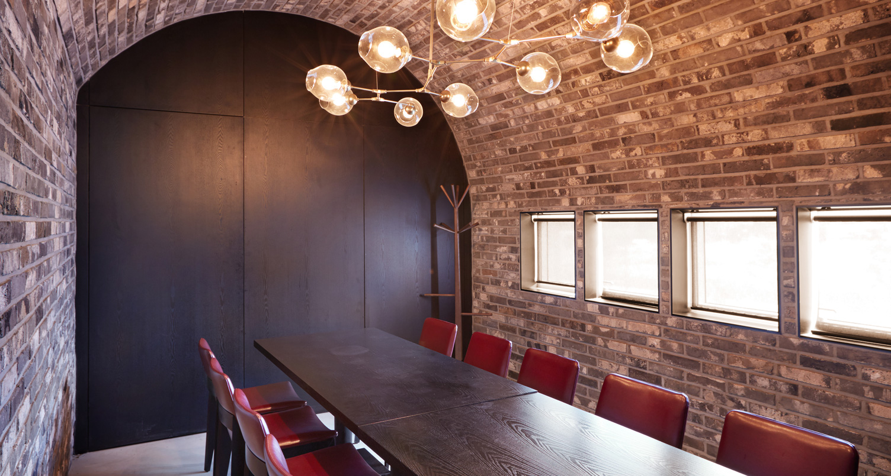
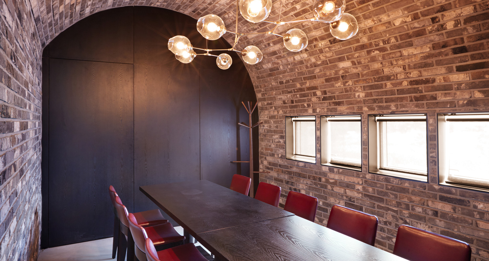

[매드포갈릭의 홀] 와인 케이브에서 실제 사용하는 벽돌을 활용해 리얼리티를 살렸으며 곡선을 살린 고급스러운 인테리어 구조로 와이너리에 온듯한 느낌과 아늑한 분위기에서의 식사를 경험할 수 있습니다.
[매드포갈릭의 오픈 키친] 풀 오픈 키친(Full Open Kitchen)으로 매드포갈릭의 40여가지의 독창적인 메뉴를 완성하는 셰프들의 역동적인 모습을 생생하게 마주할 수 있습니다.
[매드포갈릭의 프라이빗 룸] 유럽의 유서깊은 와이너리의 비밀스러운 와인 테이스팅룸을 연상시키는 프라이빗 룸은 고객님만을 위한 프라이빗한 식사를 즐길 수 있는 분위기를 제공합니다.
[매드포갈릭의 와인 셀러] 매드포갈릭에서는 식사와 와인을 즐기면서도 100여가지 와인을 투명한 와인 셀러를 통해 눈으로도 즐길 수 있습니다. 국내 최대 규모의 와인 판매 레스토랑에서 푸드 & 와인 마리아쥬를 경험하실 수 있습니다.
 예약하기
예약하기
 
